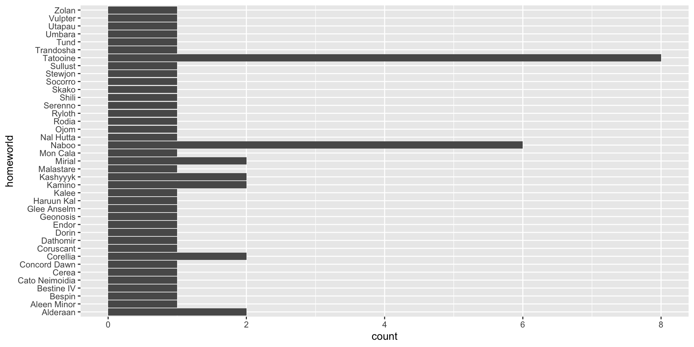
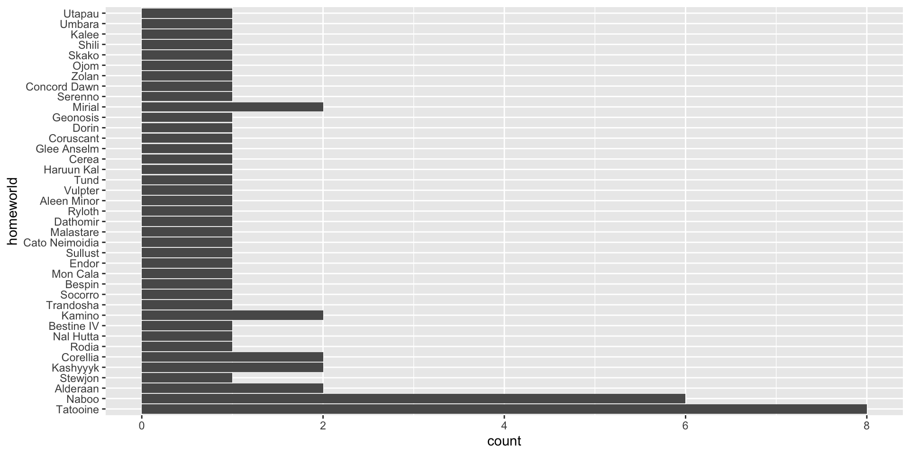
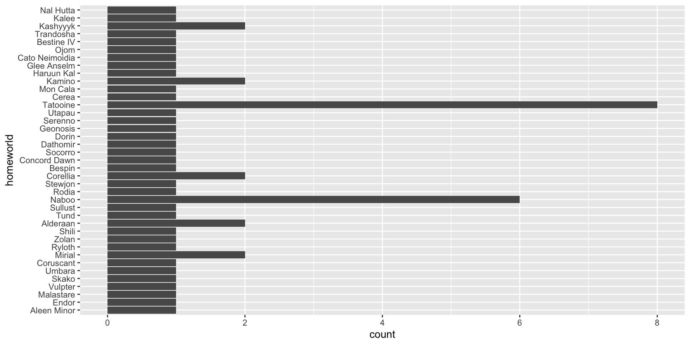
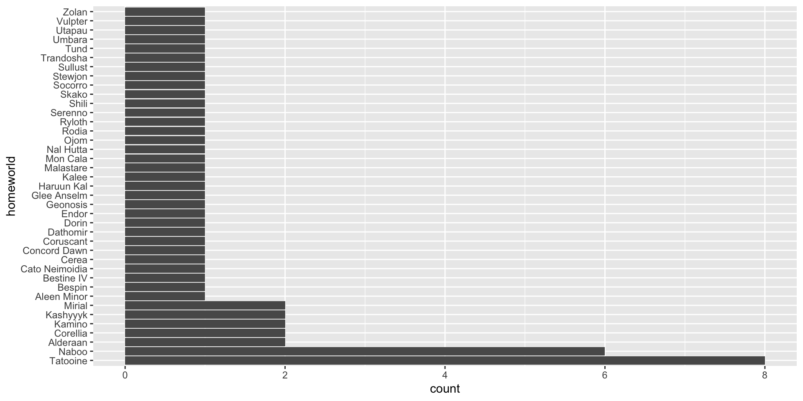
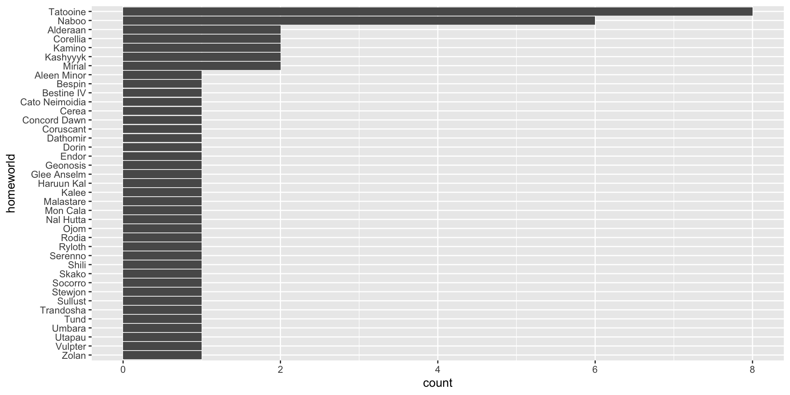
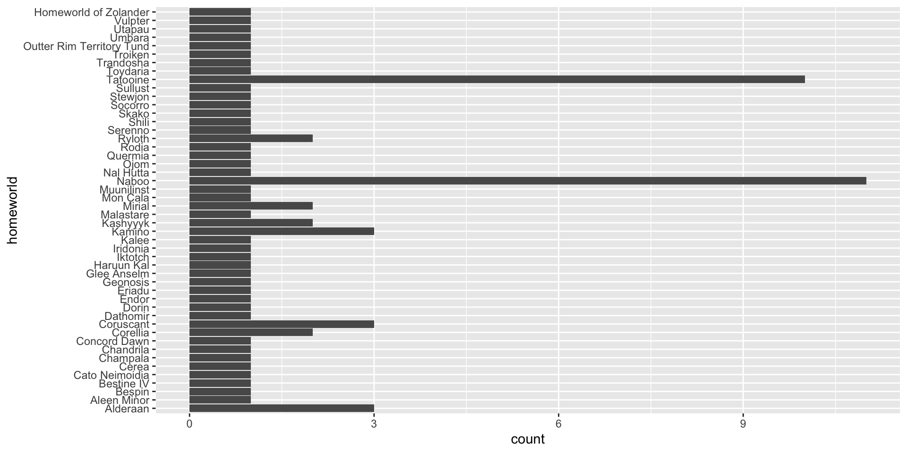
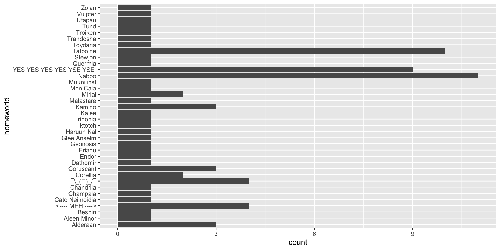
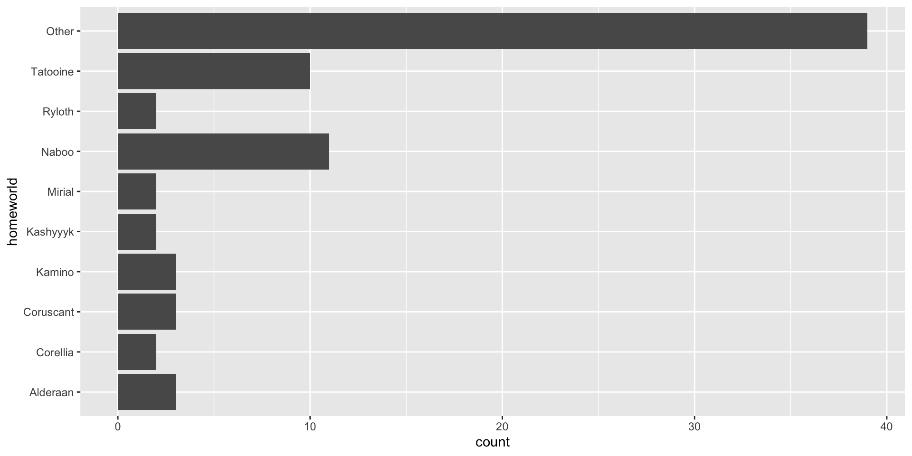
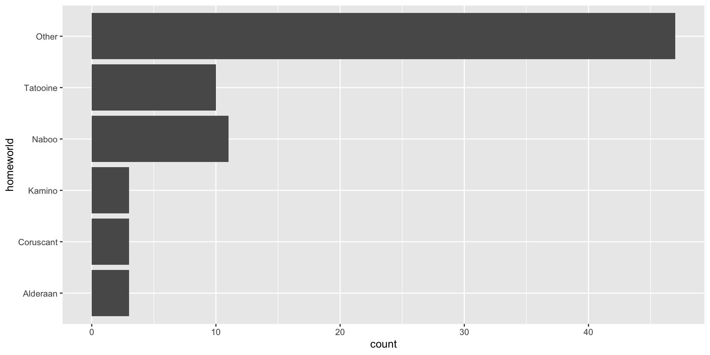
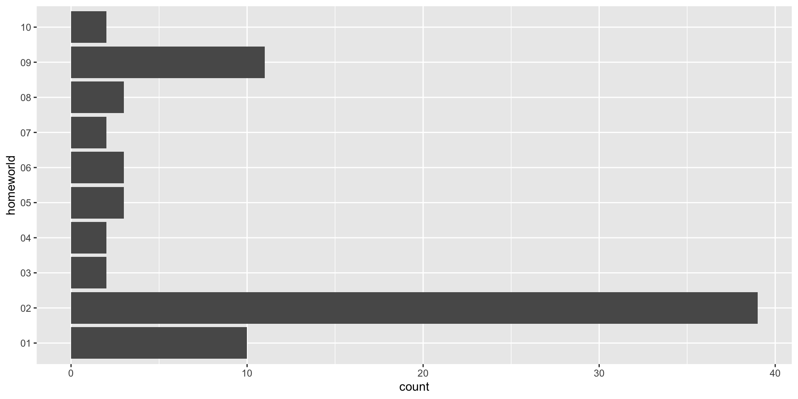

[1] "character"[1] "Monday" "Tuesday" "Wednesday" "Thursday" "Friday" "Saturday"
[7] "Sunday" Defining Categorical Types
In this brief presentation, we’ll be introducing the following items:
Unique and individual grouping that can be applied to a study design.
character typeThe function sample() allows us to take a random sample of elements from a vector of potential values.
However, if we want a large number items, we can have them with or without replacement.
We’ll pretend we have a bunch of data related to the day of the week.
Length Class Mode
40 character character [1] "Sunday" "Sunday" "Sunday" "Monday" "Thursday" "Saturday"
[7] "Thursday" "Thursday" "Monday" "Wednesday" "Sunday" "Sunday"
[13] "Sunday" "Tuesday" "Friday" "Saturday" "Monday" "Monday"
[19] "Saturday" "Friday" "Tuesday" "Friday" "Thursday" "Sunday"
[25] "Friday" "Friday" "Sunday" "Friday" "Sunday" "Friday"
[31] "Friday" "Saturday" "Thursday" "Friday" "Tuesday" "Monday"
[37] "Monday" "Wednesday" "Tuesday" "Sunday" factor [1] Sunday Sunday Sunday Monday Thursday Saturday Thursday
[8] Thursday Monday Wednesday Sunday Sunday Sunday Tuesday
[15] Friday Saturday Monday Monday Saturday Friday Tuesday
[22] Friday Thursday Sunday Friday Friday Sunday Friday
[29] Sunday Friday Friday Saturday Thursday Friday Tuesday
[36] Monday Monday Wednesday Tuesday Sunday
Levels: Friday Monday Saturday Sunday Thursday Tuesday WednesdayEach factor variable is defined by the levels that constitute the data. This is a .red[finite] set of unique values
If a factor is not ordinal, it does nota allow the use relational comparison operators.
Where ordination matters:
Fertilizer Treatments in KG of N2 per hectare: 10 kg N2, 20 N2, 30 N2,
Days of the Week: Friday is not followed by Monday,
Life History Stage: seed, seedling, juvenile, adult, etc.
Where ordination is irrelevant:
River
State or Region
Sample Location
[1] Sunday Sunday Sunday Monday Thursday Saturday Thursday
[8] Thursday Monday Wednesday Sunday Sunday Sunday Tuesday
[15] Friday Saturday Monday Monday Saturday Friday Tuesday
[22] Friday Thursday Sunday Friday Friday Sunday Friday
[29] Sunday Friday Friday Saturday Thursday Friday Tuesday
[36] Monday Monday Wednesday Tuesday Sunday
7 Levels: Friday < Monday < Saturday < Sunday < Thursday < ... < WednesdayThe problem is that the default ordering is actually alphabetical!
Specifying the Order of Ordinal Factors
[1] Sunday Sunday Sunday Monday Thursday Saturday Thursday
[8] Thursday Monday Wednesday Sunday Sunday Sunday Tuesday
[15] Friday Saturday Monday Monday Saturday Friday Tuesday
[22] Friday Thursday Sunday Friday Friday Sunday Friday
[29] Sunday Friday Friday Saturday Thursday Friday Tuesday
[36] Monday Monday Wednesday Tuesday Sunday
7 Levels: Monday < Tuesday < Wednesday < Thursday < Friday < ... < Sunday
[1] Monday Monday Monday Monday Monday Monday Tuesday
[8] Tuesday Tuesday Tuesday Wednesday Wednesday Thursday Thursday
[15] Thursday Thursday Thursday Friday Friday Friday Friday
[22] Friday Friday Friday Friday Friday Saturday Saturday
[29] Saturday Saturday Sunday Sunday Sunday Sunday Sunday
[36] Sunday Sunday Sunday Sunday Sunday
7 Levels: Monday < Tuesday < Wednesday < Thursday < Friday < ... < SundayYou cannot assign a value to a factor that is not one of the pre-defined levels.
forcats forcats libraryPart of the tidyverse group of packages.
This library has a lot of helper functions that make working with factors a bit easier. I’m going to give you a few examples here but strongly encourage you to look a the cheat sheet for all the other options.
There is a StarWars API at https://swapi.py4e.com, see ?starwars to learn more about the data it contains. Let’s take this data to play with the library.
[1] Tatooine Tatooine Naboo Tatooine Alderaan
[6] Tatooine Tatooine Tatooine Tatooine Stewjon
[11] Tatooine Kashyyyk Corellia Rodia Nal Hutta
[16] Corellia Bestine IV Naboo Kamino Trandosha
[21] Socorro Bespin Mon Cala Endor Sullust
[26] Cato Neimoidia Naboo Naboo Naboo Malastare
[31] Dathomir Ryloth Aleen Minor Vulpter Tund
[36] Haruun Kal Cerea Glee Anselm Coruscant Dorin
[41] Naboo Geonosis Mirial Mirial Serenno
[46] Concord Dawn Zolan Ojom Kamino Skako
[51] Shili Kalee Kashyyyk Alderaan Umbara
[56] Utapau
39 Levels: Alderaan Aleen Minor Bespin Bestine IV Cato Neimoidia ... Zolan [1] Tatooine Tatooine Naboo Tatooine Alderaan
[6] Tatooine Tatooine Tatooine Tatooine Stewjon
[11] Tatooine Kashyyyk Corellia Rodia Nal Hutta
[16] Corellia Bestine IV Naboo Kamino Trandosha
[21] Socorro Bespin Mon Cala Endor Sullust
[26] Cato Neimoidia Naboo Naboo Naboo Malastare
[31] Dathomir Ryloth Aleen Minor Vulpter Tund
[36] Haruun Kal Cerea Glee Anselm Coruscant Dorin
[41] Naboo Geonosis Mirial Mirial Serenno
[46] Concord Dawn Zolan Ojom Kamino Skako
[51] Shili Kalee Kashyyyk Alderaan Umbara
[56] Utapau
39 Levels: Alderaan < Aleen Minor < Bespin < Bestine IV < ... < Zolan
data.frame



New Value = Old Value

starwars |>
filter( !is.na(homeworld) ) |>
mutate( homeworld = fct_collapse( homeworld,
"<---- MEH ---->" = c("Bestine IV","Cerea", "Dorin","Miral", "Sullust"),
"¯\\_(ツ)_/¯" = c("Umbara","Kashyyyk","Concord Dawn"),
"YES YES YES YES YSE YSE " = c("Nal Hutta","Ojom","Rodia","Ryloth","Serenno","Shili","Skako","Socorro")
)) |>
ggplot( aes(x=homeworld) ) +
geom_bar() +
coord_flip()


# A tibble: 48 × 2
homeworld film
<chr> <int>
1 Tatooine 8
2 Naboo 6
3 Alderaan 3
4 Coruscant 3
5 Corellia 2
6 Kamino 2
7 Kashyyyk 2
8 Mirial 2
9 Ryloth 2
10 Aleen Minor 1
# ℹ 38 more rows